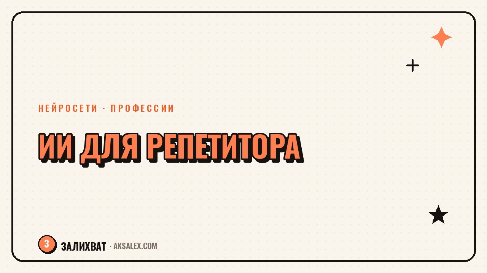

Нейросети для репетитора: уроки, ученики, домашка

Репетитор тратит на подготовку к занятию иногда больше времени, чем на само занятие: нужно продумать план, подобрать задания под конкретного ученика и написать внятный отчёт родителям. Нейросеть не заменит объяснение у доски, но заберёт часть рутины вокруг урока. Разбираем, что ей можно доверить, а что лучше делать самому.
Какие задачи репетитора нейросеть берёт на себя
Главная ценность нейросети для репетитора - не в том, что она умнее учителя, а в том, что она быстро закрывает рутину вокруг урока. План занятия, подборка упражнений по теме, карточки для повторения - всё это раньше собиралось вручную из учебников и методичек, а теперь можно получить черновик за несколько минут.
При этом живое объяснение, разбор реакции ученика и подстройка темпа под его настроение остаются полностью за репетитором. Нейросеть не видит, что ребёнок устал или стесняется задать вопрос, - это замечает только человек рядом.
Что лучше оставить себе
- Живое объяснение сложной темы и ответы на уточняющие вопросы
- Оценку эмоционального состояния ученика на занятии
- Финальное решение о темпе программы и переходе к новой теме
- Личный контакт с родителями в сложных ситуациях
Как готовить уроки быстрее с нейросетью
Чтобы план урока получился рабочим, а не общим, запрос нужно собрать из конкретики: тема, уровень ученика, сколько времени есть и что было на прошлом занятии. Чем точнее вводные, тем меньше потом редактировать готовый план.
- Опиши уровень ученика и что уже пройдено - не общий класс, а конкретные темы
- Укажи длительность занятия и формат - онлайн или очно, с доской или без
- Попроси несколько уровней сложности одного задания сразу
- Проси примеры и задачи, а не только теорию - теорию ученик слышит на обычных уроках
Нейросеть даёт черновик урока, а не готовое занятие - твоя задача подогнать его под конкретного ребёнка, а не зачитать с экрана.
Проверка домашки и разбор ошибок ученика
Нейросети с распознаванием текста и формул неплохо справляются с проверкой письменных заданий: можно сфотографировать тетрадь и получить список ошибок с объяснением, где и почему ученик свернул не туда. Это экономит время на рутинной проверке и освобождает его для разбора причин ошибки на занятии.
Важно не отдавать нейросети финальную оценку. Она хорошо находит фактическую ошибку, но не всегда понимает, что ученик недавно разобрался с темой и ошибся по невнимательности, а не потому что не понял материал.
Как использовать проверку с умом
- Сначала проверяй сама, нейросеть используй как второй взгляд на сложные случаи
- Проси объяснение ошибки, а не только исправленный вариант
- Сохраняй частые ошибки ученика отдельно - так проще заметить системную проблему
Общение с родителями и отчёты об успехах
После занятия родители обычно хотят короткий, но содержательный отчёт: что прошли, что получилось, над чем работать дальше. Если держать заметки по каждому уроку, нейросеть легко соберёт из них связный текст без двух часов на формулировки вечером.
- Фиксируй после каждого урока три пункта: тема, успех, зона роста
- Раз в неделю проси нейросеть собрать из заметок сводку для родителей
- Проверяй тон перед отправкой - сухой отчёт от нейросети стоит сделать теплее
Какие сервисы использовать: сравнение
Для большинства задач репетитора хватает пары универсальных нейросетей и одного-двух специализированных сервисов под конкретный предмет.
| Задача | Сервис | Что получишь |
|---|---|---|
| Подготовка плана урока | ChatGPT или GigaChat | Структура занятия с примерами и вопросами за несколько минут |
| Проверка домашнего задания | Сервисы распознавания формул, ChatGPT для текстов | Разбор ошибки и объяснение, а не только правильный ответ |
| Карточки и тренажёры | Quizlet с генерацией вопросов | Набор карточек по теме урока за пару минут |
| Отчёт родителям | YandexGPT или GigaChat | Связный текст из коротких заметок урока |
Не обязательно держать все сервисы сразу - начни с одной универсальной нейросети и добавляй специализированные по мере того, как находишь для них конкретную задачу.
Где нейросеть может подвести репетитора
У нейросети нет доступа к учебной программе конкретной школы ученика, поэтому план урока иногда расходится с тем, что реально спрашивают на контрольных. Хорошая привычка - сверять предложенные темы с реальными заданиями из школы ученика.
- Может предложить задания сложнее или проще уровня конкретного ученика
- Не всегда знает актуальную программу и формат экзамена в этом году
- Может ошибиться в решении сложной задачи - перед уроком стоит проверить самому
Частые вопросы
Заменит ли нейросеть репетитора?
Нет, нейросеть берёт на себя подготовку материалов и рутинную проверку, но не живое объяснение и подстройку под конкретного ребёнка. Родители платят за внимание человека, а не за готовый план урока.
Какая нейросеть лучше подходит для подготовки уроков?
Для большинства предметов хватает универсальной нейросети вроде ChatGPT или GigaChat, а под конкретный предмет можно добавить специализированный сервис - например, для формул или карточек. Выбирай по тому, что проще внедрить в свой уже рабочий процесс.
Можно ли доверить нейросети полную проверку домашнего задания?
Лучше использовать её как второй взгляд, а не единственного проверяющего. Нейросеть хорошо находит фактическую ошибку, но не всегда различает невнимательность и реальное непонимание темы.
Как убедить ученика или родителей, что план урока не «написан роботом»?
Используй нейросеть для черновика, а финальный план всегда дорабатывай под конкретного ребёнка - добавляй примеры, которые ему близки, и меняй порядок под его темп. Готовый урок должен ощущаться личным, даже если черновик собрала нейросеть.
Безопасно ли загружать работы ученика в нейросеть для проверки?
Загружай только сам текст задания без личных данных ученика - имени, школы, других опознавательных деталей. Этого достаточно для проверки ошибки и не создаёт риска для приватности ребёнка.
Раз тема оказалась полезной, вот что почитать следующим. Как нейросеть помогает выбрать книгу под настроение и задачу и каким советам можно доверять.
Читать статью →а не вручную